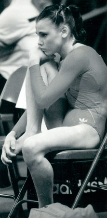

Olga Chudina (USSR)
1988 World Sports Fair AA Silver Medalist

Olga was born on July 12, 1971 in Orekhovo-Zuevo. Her first coach was Natalia Vorobieva and, a few years later, she moved to Moscow to train at CSKA with Viktor and Irina Razumovsky. Olga has worked as a coach and choreographer in the tri-state area of New York for over twenty years.
Competition Results
1983 1986 1987 1988 1989 This page was created on September
28, 2002 and was last updated on August 8, 2026.
Jr. USSR Championship: 1st Team, 2nd AA (Candidate for Master)
Moscow Spartakiad: 3rd AA, 1st B
USSR Spartakiad: 1st Team
Kraft International: 11th AA, 2nd V
USA-USSR Dual Meet: 1st Team, 12th AA
USSR Championship: 14th AA
USSR Cup: 11th AA
FRG-USSR Dual Meet: 1st Team, 4th AA
USSR Championships: 10th AA
USSR Cup: 5th AA
World Sports Fair: 1st Team, 2nd AA, 1st V, 1st FX
USSR Championships: 4th V, 8th FX
USSR Cup: 17th AA
© Gymn Forum